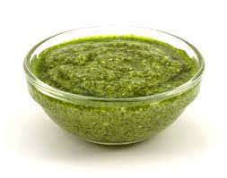

Pesto

Description
Pesto is a sauce with a long history dating back to ancient Rome.
It was originally made with crushed garlic, olive oil, and Parmesan cheese.
Today, pesto is made with a variety of ingredients, but the most common include basil, pine nuts, Parmesan cheese, and olive oil.
Ingredients
- 3 cups packed fresh basil leaves
- 4 cloves garlic
- ¾ cup grated Parmesan cheese
- ½ cup olive oil
- ¼ cup pine nuts
- ½ cup chopped fresh parsley
Steps
- Combine basil, garlic, Parmesan cheese, olive oil, and nuts in the bowl of a food processor or blender.
- Blend to a smooth paste